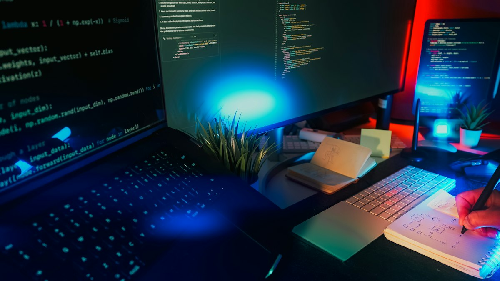

AI-assisted development
Led adoption of agentic workflows on Pokémon GO, establishing retrieval-augmented generation patterns and a practical approach to AI-assisted coding.
AI workflowsRAGDeveloper experience
More about this work
Helped developers distinguish useful AI assistance from unreviewed code generation, while aligning leadership expectations with the realities of engineering practice.